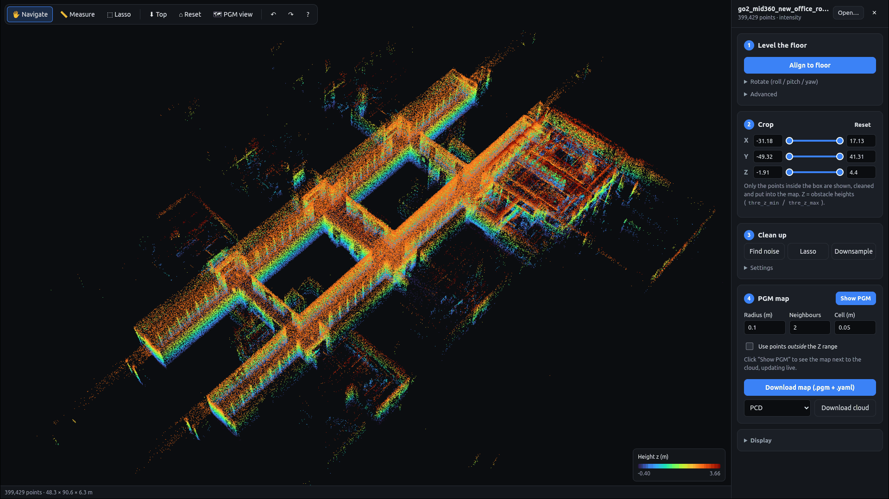

PCD · points used for the map removed by radius filter
PGM occupied free
Updating…
Point cloud → Nav2 map
Clean a SLAM point cloud and export a 2D occupancy map (map.pgm + map.yaml). See the PCD and the PGM side by side while you tune.
- 🔒 Runs in your browser. Nothing is uploaded
- 🧩 No ROS install needed
- 📄 Same output as
map_saver_cli

- 1Level the floorAuto-rotate so the floor is z = 0
- 2CropX / Y / Z sliders, applied live
- 3Clean upRemove noise, lasso-erase objects
- 4PGM mapTune live, download for Nav2
Map pipeline from pcd2pgm, the same parameters work in both.